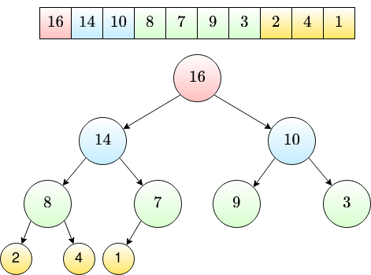
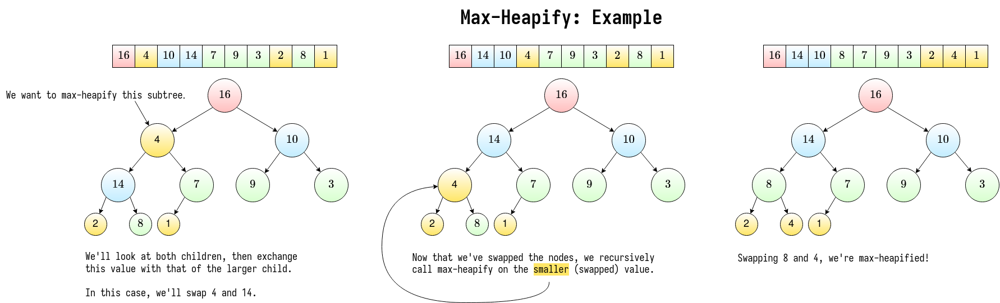

Heaps & Priority Queue
To introduce a heap, we'll use priority queues as a motivating factor.
Priority Queue
Operations:
- \(insert(S, x)\): insert element \(x\) into set \(\mathbf{S}\)
- \(max(\mathbf{S})\): return element of \(\mathbf{S}\) with the largest key
- \(extract\_max(\mathbf{S})\): same as \(max\), but remove the element from \(\mathbf{S}\).
- \(increase\_key(\mathbf{S}, x, k)\): increase the value of \(x\)'s key to new value \(k\).
Heap
Heap
An array visualized as a nearly complete binary tree.
Heap as a Tree

- root of tree: first element (\(i = 1\))
- parent: \(\frac{i}{2}\)
- \(left(i) = 2i\)
- \(right(i) = 2i + 1\)
Max-Heap Property
The key of a node is greater than or equal to the keys of its children.
A heap that maintains the max-heap property would be excellent fpr the priority queue's \(extract\_max\) operation. Think - with a priority queue, you're constantly pulling the element with the max priority.
So the question: how do we build a max heap? It should have the following operations:
- \(build\_max\_heap\): produces a max heap from an unordered array
- \(max\_heapify\): correct a single violation of the heap property in a subtree's root
Max Heapify

Observations:
\(max\_heapify\) takes \(O(1)\) for nodes that are a single level above leaves. In general, \(O(l)\) time for nodes that are \(l\) levels above leaves.
\(\frac{n}{4}\) nodes with level 1, \(\frac{n}{8}\) with level 2, ..., \(1\) node at level \(\log{n}\).
So the total amount of work in \(max\_heapify\)'s for loop is \[\frac{n}{4}(1c) + \frac{n}{8}(2c) + \dots + 1(\log{(n)}c)\]
To make this easier to reason about, we'll set \(\frac{n}{4} = 2^k\). \[ c2^k\left(\frac{1}{2^0} + \dots + \frac{k+1}{2^k}\right) \]
..which is \(c2^k\) multiplied by some big series that converges on some constant (less than 3).
Heap Sort
Once we have \(build\_max\_heap\), we get \(heap\_sort\) for free!
- \(build\_max\_heap\) from unordered array
- find max element \(A[1]\)
- swap elements \(A[n]\) with \(A[1]\)
- discard node \(n\) from heap, decrementing \(heap\_size\)
- new root may violate max heap property, but its children are max heaps.
- just run \(max\_heapify\) on the children!